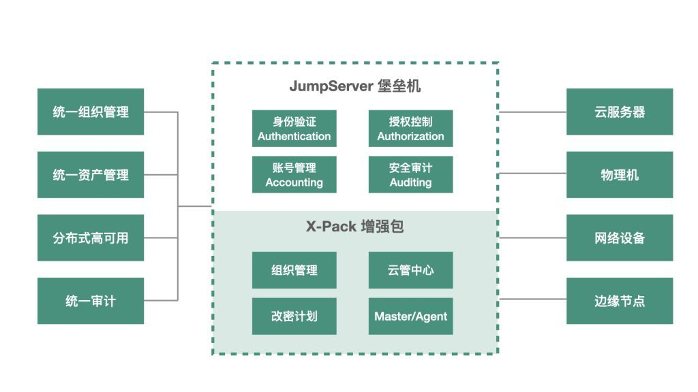

编者注：在2021年10月16日举办的“2021 JumpServer开源堡垒机城市遇见· 成都站”活动中，云智天下研发部经理周正军分享了题为《JumpServer在云智天下多数据中心应用实践》的演讲。以下内容根据本次演讲整理而成。
成都云智天下是一家专注互联网小镇和智慧城市建设运营的高新技术企业。依托强大的通信网络、广电网络、互联网及物联网的技术实力，以及全程建设、管理、服务、运营的全链条实施能力，云智天下为互联网小镇、i成都、智慧景区、智慧社区、智慧校园、智慧厂园等场景提供互联网基础设施的安装维护暨后向增值服务等。
2016年，云智天下在成都建设了互联网小镇一期，面向成都周边的29个小镇进行IT信息化建设；2018年，云智天下建设了多数据中心，同时也上线了数据通信流量平台；2019年，云智天下的业务向全国拓展，覆盖到了新疆和海南。
多数据中心的建设意味着IT基础设施规模的快速扩张。目前，云智天下已经形成了“公有云+私有云+边缘云”的IT架构，拥有7个数据中心，云上运营的服务超过700个，计算节点超过400个。
我们采用的是云网融合的技术架构，云上运营着一系列的应用，支持智慧社区、互联网小镇、流量平台的数据采集，还有一些指令的下发；网络建设方面，云智天下目前有三张网，分别是智慧社区下的物联网、家用带宽和互联网小镇使用的AP、PON组成的数据通信网，以及IDC数据中心网络。
业务痛点
■ 云场景
云智天下云平台的架构设计，底座是基于Kubernetes加一部分KVM组成了一个云虚拟资源池，下层是相应的一些物理资源，上层的话就是我们所定义的一些中台能力，最顶层是应用层。在云的场景中，我们的IT运维面临的痛点包括：第一，资源较多，有云资源和虚拟机资源，管理有一定的复杂度；第二，由于IT架构采用的是多数据中心并且跨地域的设计，日常运维压力比较大；
■ 数通网架构
云智天下的数通业务网络架构是接入了多种网络资源，再将公共WiFi等通过汇聚交换机接入到核心网络节点，然后再输送到互联网上去。对于数通网架构的日常运维也有几大痛点：第一就是峰值流量非常大，我们峰值流量需要跑超过百G的带宽；第二，是网络设备比较多，有核心、接入、PON、交换还有各种各样的AP，管理起来比较麻烦；
■ 智慧社区
云智天下的智慧社区采用的是“云管边端”的架构。“云”就是在应用层的一些场景应用，比如业主管理、小区管理等，主要用来存放接口和存储数据；“管”这一层指的是网络接入，比如我们现在有ZigBee、LoRa、WiFi、蓝牙，通过“管”这一层把相应的设备接入进来；“边”指的是边缘计算的节点，智慧社区很多安防需求，比如人脸识别和行为识别等，这些需求需要边缘计算节点来进行相应的计算和逻辑处理；“端”是指具体的终端应用，比如门禁设备、停车场道闸、地锁、智能家居、智能窗帘等。在智慧社区的业务场景下我们的运维痛点是，部署边缘计算节点后，相关的设备会放置在小区的弱电机房中，如何把这些边缘设备管理起来是我们要优先考虑的问题。
如何用JumpServer解决运维痛点？
前面讲了云智天下多数据中心技术架构的设计和运营，总结下来，我们的运维痛点包括以下几个方面：
■ 多数据中心内资产过于分散，缺乏统一的管理。不同的项目业务需求不统一，没有灵活统一的管理机制；
■ 设备类型众多，包括云服务器、物理服务器、交换机、路由器等，运维手段相对薄弱；
■ 资产权限的管理粗放，Root账号“包打天下”，没有细颗粒度的资源权限管理体系。

而在使用了JumpServer堡垒机之后，我们在短时间内建立了统一的组织管理能力、统一的资产管理能力以及统一的审计能力，并且实现了JumpServer的分布式高可用部署，从而实现对云服务器、物理机、网络设备和边缘计算节点的统一运维管理。
1. 统一的组织管理
在日常运营中，研发部门会有针对软件侧的运维操作，数通业务部门会有针对网络设备的运维操作，业主方或者一些第三方运维团队也会有相应的运维需求。得益于JumpServer先进的技术架构设计和良好的用户体验，我们获得了统一组织管理的功能。我们在JumpServer平台上创建组织，然后将相应的部门人员映射到对应的组织中去，用这种方式实现组织管理。通过JumpServer我们可以非常灵活地把整个组织管理起来，并把权限细粒度地划分下去，从而达到统一组织管理的目的。
2. 统一的资产管理
在日常的运维工作中，我们需要管理的IT资产种类是非常多的。其中包括了云资源、边缘计算节点，以及云智天下在海南、新疆等地IDC机房的物理设备。
针对我们目前采用的多数据中心架构，考虑到一些边缘机房的设备数量不是很大，我们没有选择在边缘机房部署JumpServer的Agent，而是在中心机房到边缘机房构建VPN网络，实现三层网络可达，基于VPN实现统一的资产管理。
另外的一种场景是，一些边缘机房的IT设备数量较多且距离中心机房的距离比较远，通过VPN网络连接的延迟会比较大。针对这种情况，我们采用了JumpServer开源社区推荐的“Core+Proxy”的方案，在中心机房部署JumpServer的Core节点，进行资源和权限的管理。同时，在远端机房部署JumpServer的Agent节点。这样做的好处是从远端机房发起的请求通过负载均衡访问Koko节点，然后去中心机房的Core组件进行权限验证，再返回到Koko组件经授权访问相应设备。这样一来数据的交互是在网络的远端进行，不会占用中心机房的网络资源。
3. 分布式高可用部署
我们的数据中心内有很多核心设备，需要实现99.99%以上的高可用，因此与之配套的堡垒机、日志系统等也需要支持高可用的部署方案。
JumpServer的高可用部署我们采用的是双Master（主-主）架构，这主要是从两个方面来考虑。一是因为我们的IT核心设备自身的一些高可用要求，二是网络层的需求。因为我们的两个机房都是在成都，机房之间通过专业的拨分设备连接，这样两个机房之间的网络延迟非常小，基本可以忽略不计。
两个Master机房中，其中一个机房通过部署“VIP+HAProxy”实现负载均衡。机房包括JumpServer的一些具体组件，以及Redis和MySQL的存储。MySQL存储上我们选用了PXC（Percona Xtradb Cluster）的高可用方案。在实际运用时PXC方案会对吞吐量带来一定的消耗，因为PXC在数据提交时是强一致性的数据中间件，所以在网络延迟高或者离数据中心远的情况下，需要注意PXC带来的一部分影响。此外，我们镜像文件是存储到分布式集群的，因为我们本身在MINIO和Elasticsearch上有相应的集群，所以可以直接进行对接。
4. 统一的审计
对于运维团队、第三方的合作伙伴在设备上的具体操作需要实现可回溯和审计，在故障发生时需要进行统一的回放查看。基于JumpServer的安全审计能力，我们实现了对内外部用户操作行为的审计、针对Linux和Window资产的操作录像可回放，以及对资产和应用等操作的命令进行审计。
总结来说，在实际使用JumpServer的过程中，我们发现了这款开源堡垒机越来越多的亮点。例如前面提到的组织管理、通过Web UI的方式连接数据库、工单管理、登录复核等。其中有两个功能对于我们来说非常实用也是经常使用到的。
① 多云资产纳管：由于我们的云上资产比较多，且分布在不同的公有云平台上，借助多云资产纳管功能，我们可以一键将云上资产导入到JumpServer；
② 改密计划：等保规范和ISO相关认证都对密码的使用期限做出了要求，密码需要一周或者两周更改一次。借助改密计划功能，JumpServer可以自动定期的进行密码修改，节省了大量的运维操作。
JumpServer让不同的团队受益
在使用JumpServer堡垒机后，我们从这款开源堡垒机获得的价值并不局限在运维部门内部。总结来说，JumpServer给云智天下的基础设施团队、开发者、运维团队和管理者都从不同的角度带来了更好的应用体验：
1. 对于基础设施团队：基础设施团队要求非常直接，就是用最少的钱解决问题。JumpServer是开源软件，相比其他安全厂家在价格方面更公道，既为企业交付了分布安全可靠的堡垒机解决方案，同时也提高了利用资源的效率，减少了企业基础运维成本的支出；
2. 对于开发者：JumpServer社区化运营的方式对于开发者而言一直都是非常有亲和力的。JumpServer开源项目的Star数增长情况和社区的活跃度都非常好，为开发者提供了一个良好的交流平台；基于JumpServer的开源许可协议，我们也可以Fork一些代码来做相应的对接，满足企业的个性化需求；JumpServer还提供了开放的API，如果我们要做资产的统一纳管，或者说我们想把OA系统与相应资产打通，完全可以通过API对接的方式实现；
3. 对于运维团队：JumpServer为运维团队提供了运维安全审计系统，运维操作回看和故障回放的功能在日常的运维工作中非常有用。操作界面方面，JumpServer提供了非常好的操作体验，比起一些传统堡垒机的操作更加简便和快捷。另外就是JumpServer采用的是分布式架构设计，架构中的每一个组件都可以扩容，方便我们后续业务的拓展；
4. 对于管理者：JumpServer为企业的IT管理者提供了统一的资源视图，可以随时了解IT系统的运维状态。而基于JumpServer对企业IT资源的统一管理，为组织管理提供了保障。除此之外，JumpServer完善的日志审计和操作审计让事故回放更加方便，提升了整个运维体系的安全性。
JumpServer应用的未来规划
最后来谈谈我们对JumpServer堡垒机使用的规划。未来我们计划把JumpServer整个集群迁移到Kubernetes平台上，而在迁移的过程中我们也对JumpServer有了更高的期望。
第一，JumpServer的组件数量比较多，组件越多意味着出错的概率就会越大。我们希望能有一套相对完善的运维基础设施，把JumpServer的组件纳管进来。
第二，目前JumpServer社区已经提供了通过Helm Chart命令将JumpServer部署到Kubernetes的方式，对于使用者来说是非常方便的。而JumpServer作为一个开源项目，我们希望JumpServer项目在支持高可用、高扩展性和高自我修复性方面能够提供更加强大的功能。